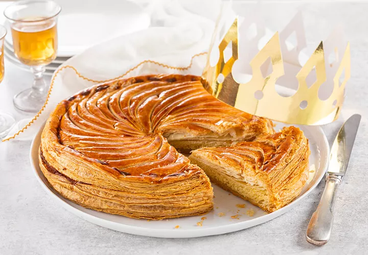

30 min - Très facile -Bon marché
Ingrédients
Pour 6 personnes :
- 75g de beurre tendre
- 100g de sucre fin
- 2 pâtes feuilletées
- 140gr de poudre d'amande
- 2 oeufs
- 1 jaune d'oeuf
Préparation
- Placer une pâte feuilletée dans un moule à tarte, piquer la
pâte avec une fourchette. - Dans un saladier, mélanger la poudre d'amandes, le sucre,
les 2 oeufs et le beurre mou. - Placer la pâte obtenue dans le moule à tarte et y cacher la
fève. - Recouvrir avec la 2ème pâte feuilletée, en collant bien les
bords. - Faire des dessins sur le couvercle et badigeonner avec le
jaune d'oeuf. - Enfourner pendant 20 à 30 min à 200°C (thermostat 6-7);
vérifier régulièrement la cuisson !